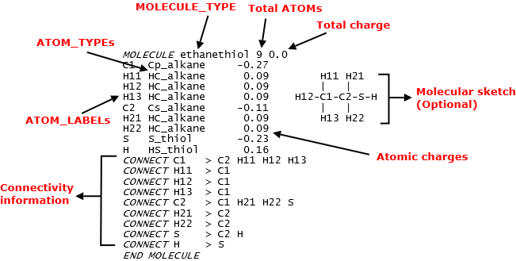
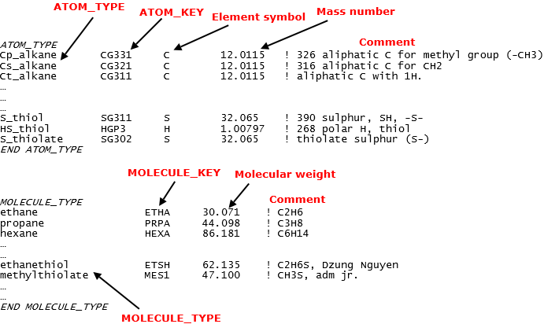

Force field data files 1¶
In molecular simulations, FF parameters are usually derived by some empirical rules, either derived from some experimental observations or quantum mechanical calculations. Different research groups use different rules to obtain these parameters. Collectively, a set of rules that model a class of molecules is called a FF scheme.
DL_FIELD implements some of the popular FF schemes as shown below:
- CHARMM - For protein molecules, lipids, carbohydrates and general small organic molecules (CGenFF).
- AMBER - For protein molecules, glycans (Glycam), and general organic molecules (GAFF).
- OPLS2005 - Proteins, small organic molecules and drug molecules.
- OPLS-DES - Deep eutectic solvents.
- OPLS CL&P - Organic cationic and anionic species for ionic liquids.
- OPLS AA/M - Protein molecules.
- PCFF - Small organic molecules, organic polymers.
- CVFF - Small organic molecules.
- Dreiding - General FF for covalent molecules.
- Inorgnic - force fields for inorganic materials.
- CHARMM19 - United atom protein model.
- G54A7 - united atom Gromos FF.
- MISC FF - general purpose definable FF.

FF Files
Each FF scheme (XX) consists of the following file components:
- Structure file (.sf), DLPOLY_XX.sf.
- Parameter file (.par), DLPOLY_XX.par.
- Miscellaneous supporting files for some FF.
These files are located in the lib/ directory and they are all expressed in the same format for all FF schemes.
The structure data file (*sf* file)
These files have filenames in the form of DLPOLY_XX.sf. For example, DLPOLY_CHARMM36_lipid.sf for CHARMM36 lipid data file. This file defines the MOLECULE templates. They define the molecular states, ATOM_TYPEs, atomic connectivity information and associated partial charges of ATOMs that made up a template.
Diagram below shows a typical example of what constitute a MOLECULE template. It is extracted from the CHARMM36_cgenff.sf file. In this example, it is a ethanethiol MOLECULE. The name ethanethiol is called a MOLECULE_TYPE in DL_FIELD term. It is a MOLECULE name, usually in a human-redable form. This is similar in analogy to ATOM_TYPE.
{kind=link}
Note that a MOLECULE definition is always enclosed within the MOLECULE and END MOLECULE directives. An ATOM_LABEL is a DL_FIELD-specific term. It is a user-define, arbitary label of an ATOM in the MOLECULE. ATOM_LABELs are only visible within a MOLECULE template definition and are used to uniquely identify ATOMs that made up a MOLECULE.
For each ATOM, it takes up to three items: a unique ATOM_LABEL, the ATOM_TYPE and its corresponding charge value. After that is the connectivity information (the CONNECT statements), of which the sequence must always follow how the ATOMs were listed in the MOLECULE.
Following the CONNECT statements would be some optional directives, which is not available in the example shown above. These optional directives will be shown later in the section.
In addition, the sf files also contain lists of all ATOM_TYPEs and MOLECULEs that are available for a FF scheme. Diagram below shows a portion of data extracted from the CHARMM36_cgenff.sf file.
{kind=link}
In other words, all ATOMs have to be listed in ATOM_TYPE directive before they can be used in the MOLECULE directive. All MOLECULEs have to be listed in the MOLECULE_TYPE directive before they are defined.
The ATOM_KEYs are DL_FIELD-specific jargon, which is the corresponding key codes for the ATOM_TYPEs. These are the actual labels that will be used in the dl_poly.CONFIG and dl_poly.FIELD files. In addition, they are also used to map the corresponding potential parameters in par files.
The MOLECULE_KEYs are DL_FIELD-specific jargon, which is the corresponding codes for the MOLECULE_TYPEs. These are the actual labels that are used in the PDB files. For example, the amino acid residue labels in PDB protein files are actually the MOLECULE_KEYs in DL_FIELD term. DL_FIELD will read these labels and then look for the corresponding MOLECULE templates to set up the FF models.
Note
All MOLECULE_TYPEs have the corresponding unique MOLECULE_KEYs. All ATOM_TYPEs are unique but different ATOM_TYPEs can share the same ATOM_KEYs.